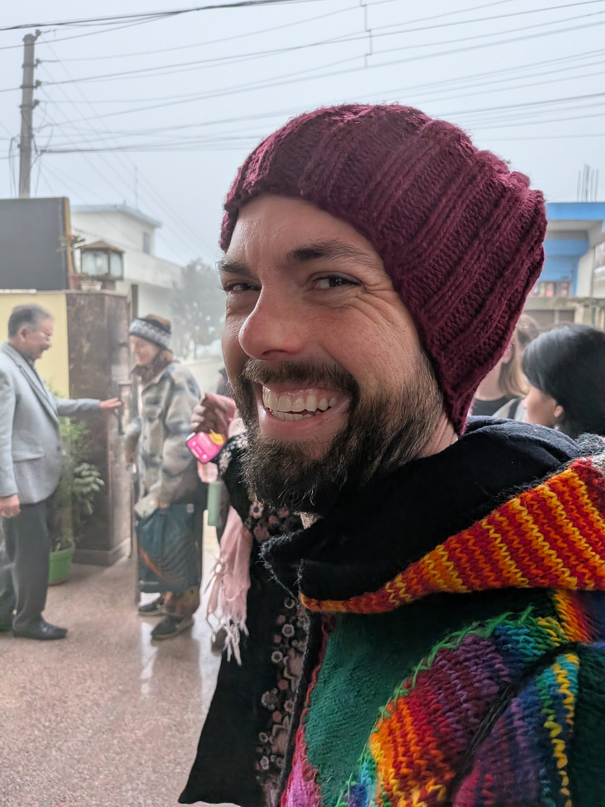

About

My Story
My path here has been anything but straight.
I'm Josh Krieter Dela Cruz — a veteran, someone who lives with chronic pain every day, and a gay man. These are not incidental details. They are the ground from which this practice grew.
I graduated from West Point and served as a Ranger-qualified officer leading paratroopers — work that demanded everything and left its mark on my body in ways I'm still learning to live with. After the military I kept moving: two years living as a civilian in the Middle East, making wine on a vineyard in Sonoma County, tending bar, and eventually spending many years as a tennis coach working with everyone from young beginners to collegiate competitors to senior citizens rediscovering the game. I've been a student of people my whole life, and I've learned more about resilience, humor, and the human will to keep going from my students and clients than from any book.
Through all of it, I was living in fear and shame, while also quietly navigating my own chronic pain — the kind that doesn't resolve, that asks you to build a different relationship with your body rather than simply fix it. That journey led me deep into integrative health: the most current western medicine alongside eastern modalities, mindfulness, contemplative practice, and eventually formal training in health and wellness coaching. I didn't come to this work from the outside. I came to it because I needed it.
What I've found — and what I bring to every session — is that the most useful thing one person can offer another isn't advice or a roadmap. It's presence. A mirror. Genuine curiosity. Company on the road.
That is what I'm here to offer you.
The Name
Walking Home Wellness Coaching takes its name from a simple but profound idea: the work of healing, growth, and self-discovery is less about becoming something new and more about returning to what you've always been. My coaching philosopy and training — while rigorously evidence-based — draws inspiration from both contemporary western techniques and more traditional eastern knowledge. This includes the Zen teaching that full presence transforms ordinary life, the modern advancements in behavior change science, and the radical self-acceptance at the heart of writings such as Walt Whitman's Song of Myself. This practice understands the coaching journey as a kind of homecoming and alignment.
Whether you are living with chronic pain or a chronic health condition, a member of the LGBTQIA+ community walking toward your most authentic self, navigating life after military service, someone drawn to mindfulness or spiritual practice, or simply feeling called toward more intentional living — you are already whole, already enough, already closer to home than you think.
As Ram Dass so beautifully put it, we're all just walking each other home. This practice exists in that spirit — I am not a guide who has all the answers, but a fellow traveler, walking alongside you, one step at a time.
Training & Approach
Trained at the University of Minnesota's Earl E. Bakken Center for Spirituality and Healing in Integrative Health and Well-being.
A collaborative, person-centered approach that draws out your own motivation for change.
An approach that recognizes the widespread impact of trauma and integrates that awareness into every interaction.
Grounded in contemplative traditions, bringing present-moment awareness into the work of everyday wellbeing.
You set the agenda. Your values, your goals, your pace.
Schedule a free introductory call. No commitment — just a conversation.
Schedule a Free Call